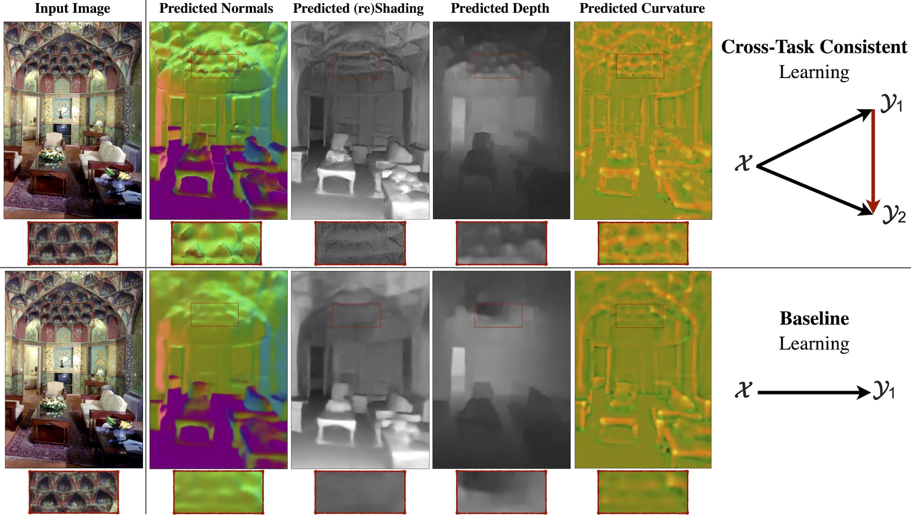
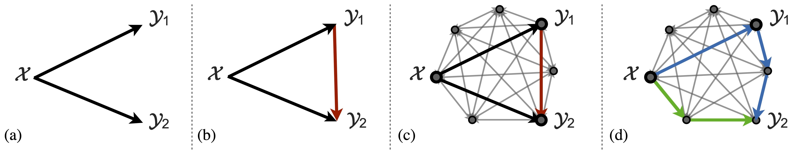
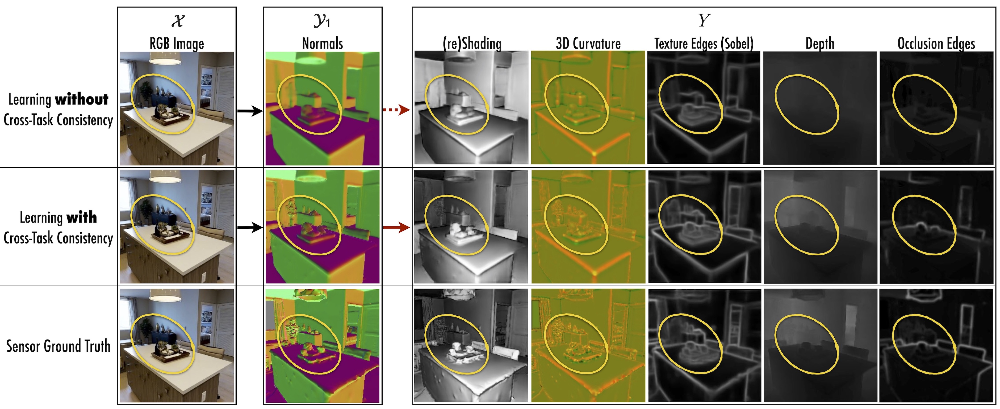
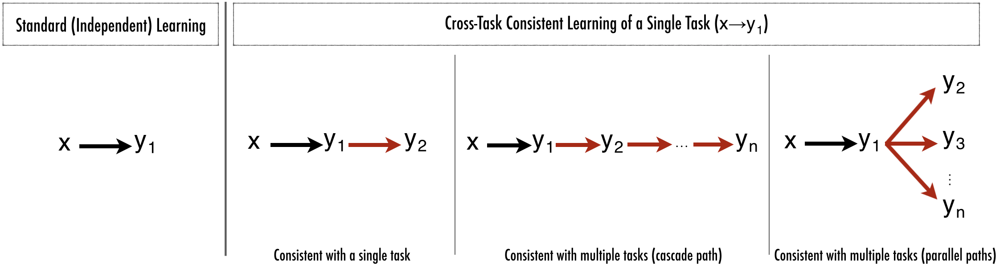
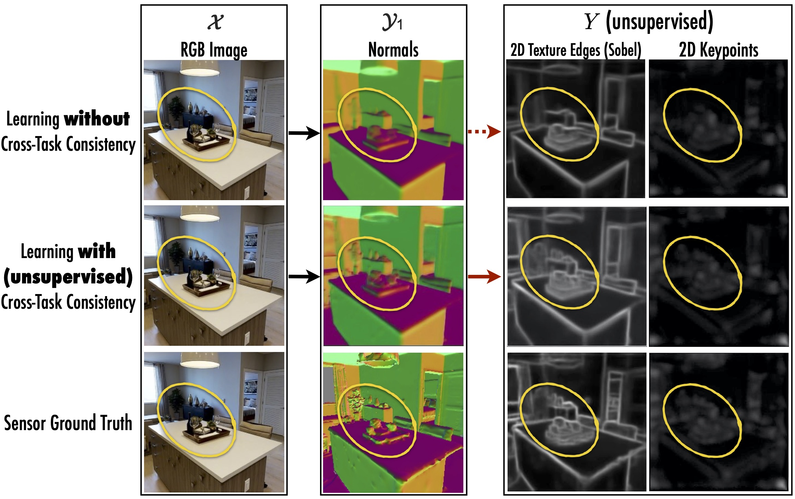
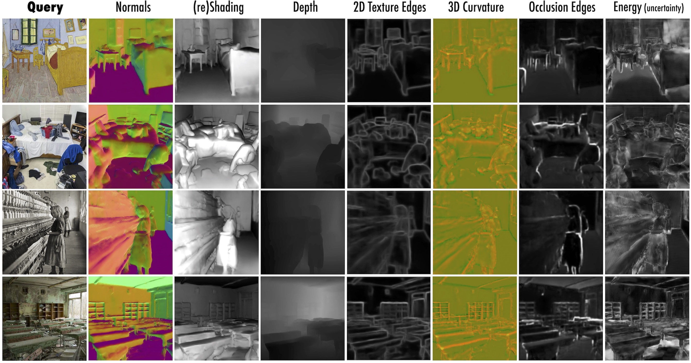
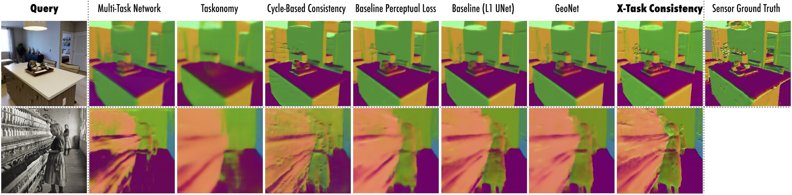

What is consistency, why is it important, and how do we use it?

Cross-Task Consistent Learning.
The lower and upper rows show the results of the baseline (independent learning) and learning with cross-task consistency. The latter yields higher quality (especially at hard-to-predict fine-grained details) and more consistent predictions. Red boxes provide magnifications.
1) What is consistency?
Suppose an object detector detects a ball in a particular region of an image, while a depth estimator returns a flat surface for the same region. This presents an issue -- at least one of them has to be wrong, because they are inconsistent. More concretely, the first prediction domain (objects) and the second prediction domain (depth) are not independent and consequently enforce some constraints on each other, often referred to as consistency constraints.
2) Why is it important to consider consistency in learning?
First, desired learning tasks are usually predictions of different aspects of one underlying reality (the scene that underlies an image). Hence inconsistency among predictions implies contradiction and is inherently undesirable. Second, consistency constraints are informative and can be used to better fit the data or lower the sample complexity. Also, they may reduce the tendency of neural networks to learn "surface statistics'' (superficial cues), by enforcing constraints rooted in different physical or geometric rules. This is empirically supported by the improved generalization of models when trained with consistency constraints.
The video below demonstrates the impact of disregarding consistency in learning as well as the effectiveness of augmenting learning with cross-task consistency constraints. Each window shows surface normals predicted out of a domain itself predicted out of the image (i.e. image→{prediction domain X}→surface normals). The normals in the upper row (learning without consistency) are poor and different/inconsistent with each other for the same underlying image. The lower row shows the same except when learning image→{prediction domain X} was augmented with cross-task consistency constraints with normals. Inferred surface normals look better and more similar to each other regardless of the middle prediction domain, which demonstrates all of the middle domains were successfully made cross-task consistent w.r.t to normals. In the paper, we further extend this concept to many arbitrary domains with arbitrary inference path lengths, using a general and fully computational learning framework.
(Note: Videos on page best seen in HD)
3) How can we design a learning system that makes consistent predictions?
This paper proposes a method which, given an arbitrary dictionary of tasks, augments the learning objective with explicit constraints for cross-task consistency. The constraints are learned from data rather than apriori given relationships. For instance, it is not necessary to encode that surface normals are the 3D derivative of depth or occlusion edges are discontinuities in depth. This makes the method applicable to any pairs of tasks as long as they are not statistically independent; even if their analytical relationship is unknown, hard to program, or non-differentiable.
The primary concept behind the method is inference-path invariance. That is, the result of inferring an output domain from an input domain should be the same, regardless of the intermediate domains mediating the inference. When inference paths with the same endpoints, but different intermediate domains, yield similar results, this implies the intermediate domain predictions did not conflict as far as the output was concerned. We apply this concept over paths in a graph of tasks, where the nodes and edges are prediction domains and neural network mappings between them, respectively. Satisfying this invariance constraint over all paths in the graph ensures the predictions for all domains are in global cross-task agreement.

Enforcing cross-task consistency.(a) shows the typical multitask setup where predictors x→y1 and x→y2 are trained without a notation of consistency (either completely independently or with a shared encoder and dedicated decoders). (b) depicts the elementary triangle consistency constraint where the prediction x→y1 is enforced to be consistent with x→y2 using a function that relates y1 to y2 (i.e. y1→y2). (c) shows how the triangle unit from (b) can be an element of a larger system of domains. Finally, (d) illustrates the generalized case where in the larger system of domains, consistency can be enforced using invariance along arbitrary paths, as long as their endpoints are the same (here the blue and green paths). This is the general concept behind "inference-path invariance". The triangle in (b) is the smallest unit of such paths.
The figure below shows the effect of training with and without cross-task consistency, for networks trained to do surface normal predictions:

Learning with and without cross-task consistency shown for a sample query. Using the notation x→y1→Y, here x is RGB image, y1 is surface normals, and five domains in Y are reshading, 3D curvature, texture edges (Sobel filter), depth, and occlusion edges.
Top row shows the results of standard training of x→y1. After convergence of training, the predicted normals (y1) are projected onto other domains (Y) which reveal various inaccuracies. This demonstrates such cross-task projections y1→Y can provide additional cues to training x→y1.
Middle row shows the results of consistent training of x→y1 by leveraging y1→Y in the loss. The predicted normals are notably improved, especially in hard to predict fine-grained details (zoom into the yellow markers).
Bottom row provides the ground truth.
(Note: Video best seen in HD)
This video demonstrates the same results as the above figure, but over a video and for depth prediction. The video is processed frame-by-frame.
Who can use cross-task consistency?
Cross-Task constraints are useful for common single-task learning too, not just multi-task. Here's how.
Let's say that you're interested in predicting some y1 given x (For example surface normals given an RGB image).
Instead of simply training a network to do x→y1 (i.e. RGB→Surface Normals), train it to do x→y1→y2 (i.e. RGB→Surface Normals→y2). It will fit the data better with improved RGB→Surface Normal predictions.

Many options for y2 work; even if you have only (x,y1) training data. All choices gave some benefit, though some more than others. Some y2 options:
Use tasks that need no supervision as y2. For instance, 2D texture edges (sobel) or 2D keypoints (SURF). The figure below shows that adding such consistency constraints improved the RGB→Surface Normals results. See section "Using Consistency with Unsupervised Tasks" in the paper.
Use our released pre-trained cross-task functions as y1→y2 in your training job. Those models can be downloaded from our github repository.

Results from using unsupervised consistency constraints. The network trained with cross-task consistency used only 2D edges and 2D keypoints as 'y2' tasks. Since these are unsupervised tasks, they required no additional supervision. Still, the consistency-trained network better fits the fine-grained details in images, as shown in the area highlighted with yellow circles. This echoes cross-task constraints are useful for common single-task learning too, even when no additional tasks/data/labels are available.
To summarize: cross-task consistency can be used to improve most every-day neural network training jobs, not just multi-task learning.
Sample Results
Below you can see sample results of learning with cross-task consistency for three sample prediction domains (surface normals, depth, (re)shading) over video and image queries. The video results are on external YouTube videos and the predictions are made frame-by-frame with no temporal smoothing. Zoom in to see the fine-grained details.

Cross-Task Consistent learning results on external domain data. Queries: Bedroom in Arles, Van Gogh (1888); Cotton Mill Girl, Lewis Hine (1908); Chernobyl Pripyat Abandoned School (c. 2009). Try the models on your own images at the live demo page.
(Note: Video best seen in HD)
Comparison with baselines: Below are some representative results from using cross-task consistent learning and various baselines. You can run comparisons yourself by uploading images on our live demo

Networks trained with cross-task consistency, or with alternative baselines. The queries are from Taskonomy dataset (top) or external data (Cotton Mill Girl, Lewis Hine 1908; bottom).
The video shows a similar comparison where predictions are made frame-by-frame.
(Note: Video best seen in HD)
Consistency Energy
We quantify the amount of inconsistency in a prediction made for a query using an energy-based quantity called Consistency Energy. It is defined to be the standardized average of pairwise inconsistencies. This is also equivalent to the sample variance of the predictions. The consistency energy is an intrinsic quantity of the system, as it requires no ground truth and can be computed without any supervision. As shown below, the energy strongly correlates with supervised error and distributions shifts. This suggests the energy can be adopted as an unsuervised confidence metric.
Empirical analyses of consistency energy.
The video shows the energy vs two continuous domain shifts (JPEG compression, Blur). The domain shift distortions are applied on the frames. The energy turns out to be an unsupervised indicator of domain shift and generally correlates with the magnitude of shift.
Interactive Visualizations
To convey a more tangible understanding of learning with cross-task consistency constraints versus baselines, we compare the results of various configurations frame-by-frame on a youtube video. Visit the visualizations page to specify the comparison configuration of your choice and compare the performance.
Live Demo on User Uploaded Images
Input Image
3D Ken Burns*
Input Image
3D Ken Burns*
Input Image
3D Ken Burns*
Try the live demo on your query image.
Live Demo
Download pretrained models.
Pretrained Models
*Using the depth predicted by the consistency-based models and Niklaus et al. 2019 Ken Burn codeusing depth predicted by the consistency-based model
Paper
Robust Learning Through Cross-Task Consistency. [CVPR 2020 Best Paper Award Nominee]